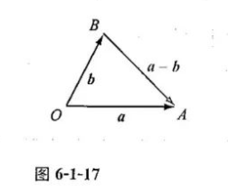
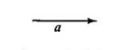
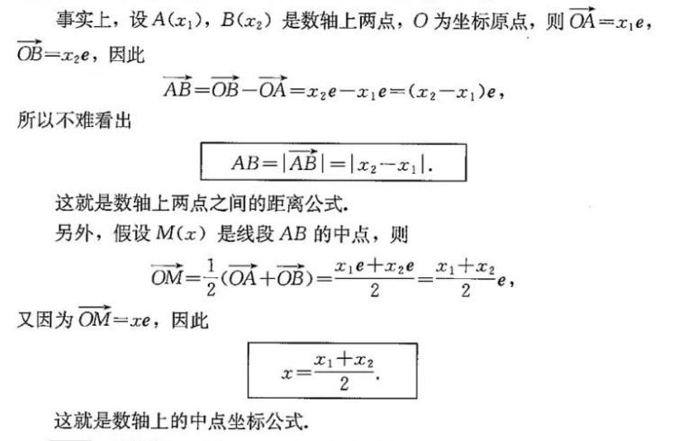
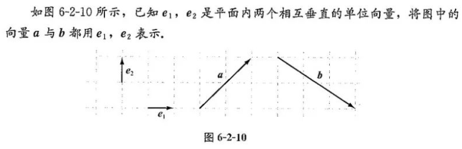

第六章 平面向量初步
注: 如非特殊说明, 以下图片都来自高中数学考点题解公众号
6.1平面向量及其线性运算
6.1.1 向量的概念
6.1.2向量的加法
$\overrightarrow {AB}$ + $\overrightarrow {BC}$ = $\overrightarrow {AC}$
6.1.3向量的减法

因为: $\overrightarrow {OB}$ + $\overrightarrow {BA}$ = $\overrightarrow {OA}$
所以: $\overrightarrow {OA}$ - $\overrightarrow {OB}$ = $\overrightarrow {BA}$
6.1.4 数乘向量

向量a
公式: $λ(μa) = (λμ)a$
例: $3 * (4a) = (3*4)a = 12a$
6.1.5向量的线性运算
实数λ,μ 向量a,b
公式: $λa + μa = (λ + μ)a$
公式: $λ(a + b) = λa + λb$
6.2向量基本定理与向量的坐标
6.2.1 向量基本定理
1.共线向量基本定理
如果向量a ≠ 0, 且向量 b∥a, 则存在唯一实数λ, 使得 b = λa
2.平面向量基本定理
如果平面内两个向量a 与 b不共线, 则对该平面内任意一个向量 c, 存在唯一的实数对(x, y), 使得 c = xa + yb
6.2.2 直线上向量的坐标及其运算
e 是单位向量(1, 0)

6.2.3平面向量的坐标及其运算
1.平面向量的坐标
零向量与任何向量都垂直.
如果平面向量{$e_1, e_2$}中, $e_1 ⊥ e_2$, 就称这组基底为正交基底, 在正交基底下向量的分解称为向量的正交分解.

可以看出, a = $2e_1 + 2e_2$, b = $3e_1 - 2e_2$
一般地:
给定平面内两个相互垂直的单位向量$e_1, e_2$, 对于平面内的向量a，如果a= $xe_1 + ye_2$, 则称(x，y)为向量a的坐标，记作a=(x, y).
2.平面上向量的运算与坐标的关系
假设平面，上两个向量a, b满足a=($x_1, \ y_1$)，b=($x_2, \ y_2$)
因为: $a + b = x_1e_1 + y_1e_2 + x_2e_1 + y_2e_2 = (x_1 + x_2)e_1 + (y_1 + y_2)e_2$.
所以: $a + b = (x_1 + x_2, \ y_1 + y_2)$.
类似地，可以得出，如果u，v是两个实数，那么:
$ua + vb = (ux_1 + vx_2, \ uy_1 + vy_2$),
$ua - vb = (ux_1 - vx_2, \ uy_1 - vy_2$)
向量的模:
$|a| = \sqrt{x^2 + y^2}$.
3.平面直角坐标系内两点之间的距离公式与中点坐标公式
设A($x_1, \ y_1$), B($x_2, \ y_2$)为平面直角坐标系中的两点，则:
$\overrightarrow {OA} = (x_1, \ y_1)$, $\overrightarrow {OB} = (x_2，y_2)$,
所以: $\overrightarrow {AB} = \overrightarrow {OB} - \overrightarrow {OA} = (x_2, \ y_2) - (x_1, \ y_1) = (x_2 - x_1, \ y_2 - y_1)$,
因此: AB = $|\overrightarrow {AB}| = \sqrt{(x_2 - x_1)^2 + (y_2 - y_1)^2}$.
这就是平面直角坐标系内两点之间的距离公式.
x = ${x_1 + x_2} \over 2$, y = ${y_1 + y_2} \over 2$
这就是平面直角坐标系内的中点坐标公式.
4.向量平行的坐标表示
设a=($x_1, \ y_1$)，b=($x_2，y_2$)，下面我们来考察这两个向量平行时，它们的坐标应该满足的条件.
a//b ⇔ $x_2y_1 = x_1y_2$.
例6: 已知$\overrightarrow {AB}$ = (2, 5)，a = (1, y), $\overrightarrow {AB}$//a, 求y的值.
解: 因为$\overrightarrow {AB}$//a, 所以1*5 = 2*y, 解得y = 2.5
6.3平面向量线性运算的应用
1.向量在平面几何中的应用
2.向量在物理中的应用